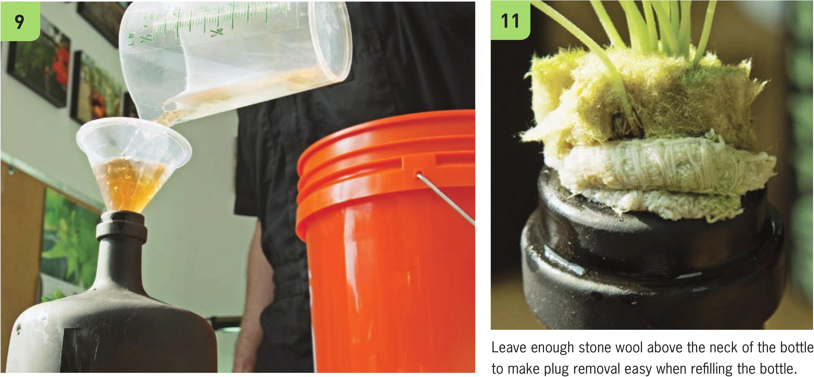

Nutrient Solution and Transplanting It is important to use a fertilizer designed for hydroponic gardens. In this garden I used FloraNova Grow, but there are many other options. Check out the Plant Nutrition chapter to learn more about hydroponic fertilizer options. 8 Mix fertilizer with water using the recommended rates listed on the fertilizer bottle or bag. Mix the water and fertilizer in a separate container to make it easy to check if the fertilizer has fully dissolved. Extra nutrient solution may be saved for a couple weeks if stored in an airtight container in a dark, cool environment. 9 Fully fill the bottle with nutrient solution. There is potential for some overflow when the seedling is inserted, but this is preferable to too little water. 10 If you do not plan on using a wicking strip (see next page), the seedling can now be transplanted into the bottle. The bottom of the plug should be sitting in nutrient solution; if needed, add more nutrient solution to make sure the plug is fully saturated. Make sure the bottle is completely full if you are not using a wicking strip because the plug will need access to the nutrient solution for several days until it can grow roots deep into the nutrient solution. The plug should not be placed too deep into the neck of the bottle. You will need to remove the plug to refill the bottle, so keep enough of the plug outside of the bottle to make removal easy in the future. 1 1 Check to see if the plug is dry during the first week. Depending on crop selection and environment, you may need to add more nutrient solution in the first few days to give your plant a chance to grow roots long enough to pull up water from the bottle. A wicking strip is not necessary, but it will help reduce the potential of your seedling drying out in the first week. HYDROPONIC GROWING SYSTEMS 47
